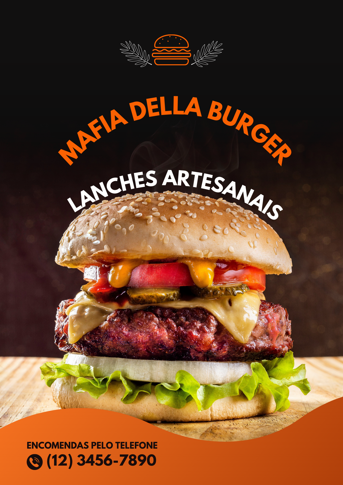

Mafia Della Burguer
Com mais de 20 variedades,Máfia Della Burguer tem lanches para toda a família, para todos os gostos!
E trazemos uma novidade:Onde você pode criar seu próprio hambúrguer! não é demais? Então venha já ou também peça pelo nosso delivery
Trás pra a sua família uma culinária artesanal incrível Fundada em 2007, permanece sendo uma das melhores hamburguerias da região, conquistando até os dias de hoje o prẽmio do melhor hamburguer da cidade.
Um dos nossos objetivos é: "levar a nossa alegria para a sua mesa"
Oferecemos um atendimento de primeira, com os melhores e mais saborosos ingredientes.
A MAFIA DELLA BURGUER é uma empresa que visa à produção e venda de lanches feitos artesanalmente. Foi concebida pelos seus fundadores Camila de Campos, Annabelly Viana, livia landim e Gabriel Caetano, que há muito tempo já desejavam criar seu negócio em conjunto. A amizade e empreendedorismo levaram esses quatro amigos de longa data a idealizar a marca MÁFIA DELLA BURGUER, que tem se tornado um referencial na produção de hambúrguer artesanal no centro de Curitiba.
Nosso estabelecimento
Localizada Av. Pres. Kennedy, 4121 - Portão, Curitiba .
Benefícios:
- Atendimento ao cliente
- Espaço diferenciado
- Localização
- Profissionais Qualificados